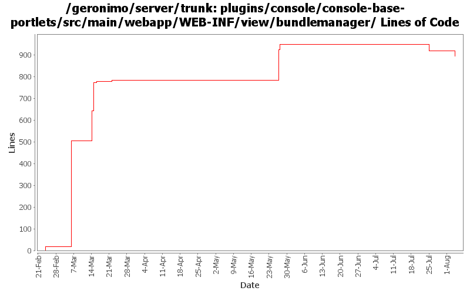

[root]/plugins/console/console-base-portlets/src/main/webapp/WEB-INF/view/bundlemanager

| Author | Changes | Lines of Code | Lines per Change |
|---|---|---|---|
| Totals | 41 (100.0%) | 1440 (100.0%) | 35.1 |
| rwonly | 35 (85.4%) | 1383 (96.0%) | 39.5 |
| xiaming | 3 (7.3%) | 38 (2.6%) | 12.6 |
| gawor | 3 (7.3%) | 19 (1.3%) | 6.3 |
GERONIMO-6059 use global javascript definitions
4 lines of code changed in 2 files:
GERONIMO-6059 Chrome can not handle hidden TR correctly, so use DIV to replace it.
38 lines of code changed in 1 file:
GERONIMO-6059 New look and feel of Geronimo 3.0 admin console (Step 2, New UI design)
34 lines of code changed in 1 file:
GERONIMO-6059 New look and feel of Geronimo 3.0 admin console (Step 1)
1 lines of code changed in 1 file:
GERONIMO-6094 Some issues of confirm msg tld in admin console
15 lines of code changed in 5 files:
GERONIMO-5978 input nothing to list all packages
2 lines of code changed in 2 files:
GERONIMO-5978 show exporters and importers in one table
55 lines of code changed in 2 files:
GERONIMO-5978 View bundle packages in Geronimo admin console
140 lines of code changed in 5 files:
GERONIMO-5895 fix variant accessibility issues, patched by Shenghao Fang
38 lines of code changed in 3 files:
GERONIMO-5847 (GERONIMO-5871) add blueprint type support
26 lines of code changed in 1 file:
GERONIMO-5847 add refresh bundle functionality and some importing wired improvements
6 lines of code changed in 1 file:
GERONIMO-5847 add show services functionality
134 lines of code changed in 4 files:
GERONIMO-5847 add Show dynamic import packages and Show import packages from require bundle functionalities, and make the bundle perspective as default
141 lines of code changed in 2 files:
GERONIMO-5847 some jsp codes clean up
301 lines of code changed in 3 files:
GERONIMO-5847 Create pure html OSGi portlet
486 lines of code changed in 5 files:
GERONIMO-5769: A separate portlet for displaying web application bundles
19 lines of code changed in 3 files: